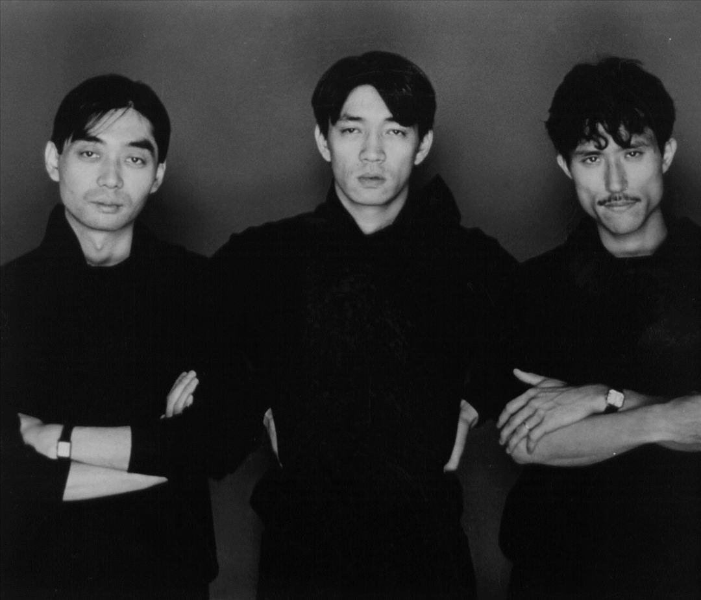

Yellow Magic Orchestra
History
Solid State Survivor
Ryuichi Sakamoto
Yukihiro Takahashi
Haruomi Hosono

History
Ya know, i gotta add stuff here. These guys are from the 70's and pioneered electronic music with them being one of the first to use synthesizers, drum machines, computers, and more new technologies with their music.